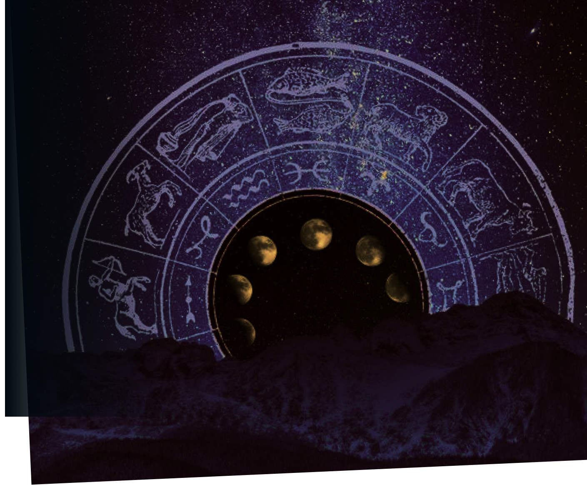

Рассчитать натальную карту
Раскройте секреты Вашего звездного кода — узнайте больше о своих уникальных силах и жизненных поворотах
Отзывы наших пользователей
После развода я чувствовала себя потерянной и неуверенной в себе. Открытие моей натальной карты на вашем сайте помогло мне по-новому взглянуть на мои сильные стороны и возможности для перезагрузки жизни. Я начала понимать, почему некоторые отношения были такими сложными, а также какие уроки я должна извлечь. Это был первый шаг к моему личному преобразованию, и я бесконечно благодарна за этот инструмент самопознания!
Ирина, 34 года
Работа занимает большую часть моей жизни, и я долго искала способы улучшить баланс между карьерой и личной жизнью. С помощью анализа натальной карты на вашем сайте я смогла осознать свою предрасположенность к работе с людьми и перешла на новую должность, которая позволяет больше времени уделять семье. Я наконец нашла свою гармонию и счастье
Ольга, 47 лет
Всегда скептически относилась к астрологии, но ваш сайт был настолько прост и понятен, что я решила дать ему шанс. Расчет натальной карты не просто удивил, но и наставил на путь самопознания. Я научилась принимать себя и поняла, в каком направлении мне двигаться дальше. Скажу честно, я обрела уверенность в принятии важных решений и планировании будущего
Екатерина, 29 лет
Натальная карта открыла мне глаза на многие аспекты моего здоровья, которым я прежде не придавала значения. Спасибо за то, что продемонстрировали связь астрологии с физическим самочувствием — это помогло мне восстановиться после операции и обратить внимание на уход за собой. Ваш сайт помог мне стать здоровее и счастливее
Анна, 53 года